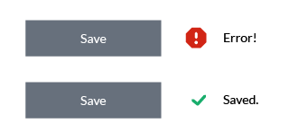
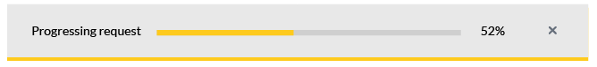
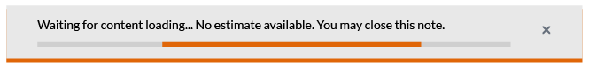
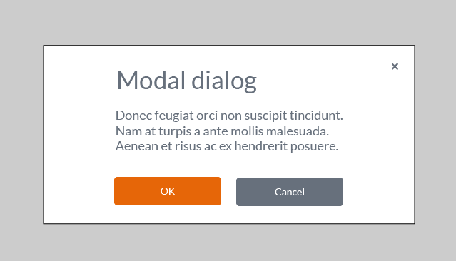

Design
Design patterns
This section describes OpusCapita design patterns and principles. A design pattern is a general repeatable solution to a commonly occurring problem. It isn't necessarily a finished design that can be transformed directly into code but can be a description or template that can be used in many different situations.
Focus
Focus is indicated with yellow color.
Focused icon
Focus in pagination
Focused hyperlink
Focused button
Icons
In general use icons from Font Awesome.
Indicator icons
- Indicator icons are used when the system indicates status information for the end user.
- Avoid using too many icons for making it easier for an end user to learn the meaning of those.
- Icons do not have a textual label.
- Use simple, flat and one-colored icons.
Common indicator icons
The table below describes the most common indicator icons that should be used consistently in different products and views.
| Icon | For |
|---|---|
| Error | |
| Warning | |
| Information | |
| Success |
Action icons
- Action icons are used for offering contextual actions.
- Action icon is differing from the indicator icon by having the yellow hover color
- If the action is disabled for any reason, the action icon is not shown i.e. it does not have the disabled state.
Common action icons
The table below describes the most common action icons that should be used consistently in different products and views.
| Icon | For |
|---|---|
| Open and close the main navigation. | |
| Ellipsis. Open a contextual menu. | |
| Open the lover levels in the main navigation. | |
| Close e.g. a dialog | |
| Expand or maximize | |
| Collapse or minimize | |
| Contextual help | |
| Product documentation | |
| Edit | |
| Settings | |
| Search | |
| Shopping cart | |
| Logout | |
| Login | |
| Refresh | |
| Delete |
Scrolling
Avoid having horizontal scrollbar. By default content, e.g. text, should wrap and scroll vertically.
Keyboard support and accessibility
Notifications
Use common component Alerts for showing notifications. Multiple warning and error notification for same reason should not be stacked i.e. previous ones are removed.
Types- Success
- Informational
- Warning
- Error
Dismissing notifications
User can dismiss every type of notification manually. Informational and success are dismissed automatically by default after certain period of time. By default warning and error notifications are not dismissed automatically. Dismiss behavior and automatic closing time can be adjusted case by case as needed.
Contextual notifications
Contextual notifications can be used if the notified message is related toonly some part of data on the current page.
Progress and waiting indicators
Progress and waiting indicators are used to indicate that the system is loading content. It is recommended to tell the user how long or which phases an operation will take and it's progress, if it is known. If that information is not available, we'll visualize unspecified waiting time. If the loading action does not prevent user to proceed with other tasks, then user should be able to close the indicator and needs to be informed when the loading is completed.
Progress bar filling from 0% to 100%
Linear waiting indicator
Circular waiting indicator
Modals
Bootstrap is used as a basis for implementation. Overlapping modals i.e. two at a time should never be used: this is an indication that something is wrong in the workflow.
Modal dialog dimms the background with Black and 22% transparency.
Confirmations
For obtrusive use modals and inline confirmation for unobtrusive. Obtrusiveness depends on the cardinality of the action e.g. invoice deletion requires an obtrusive confirmation.
Field validation
Field data should be validated when the focus is moved out of the field. Do not start validation or any automated actions while the user is completing the text entry. Validation has to be done at latest when a button (Save/OK) is pushed. After that the focus is set on the first element that contained an error. Show an instruction text to explain the error reason to the user. The error text and the field color in error case is red. Once corrected, the error label should be removed and the text color returns to default. Errors are not shown when an empty form is opened.
Mandatory fields
Indicate a mandatory field by using an asterisk ( * ) after the label.
Focused field
Focused field is indicated with yellow.
Touch interaction
Open
How widely we'll describe this here?Product documentation and contextual help
Contextual, page related help should be available where needed. There is also a product level help which provides general information about the service and includes also all the same instructions as contextual helps in one package.